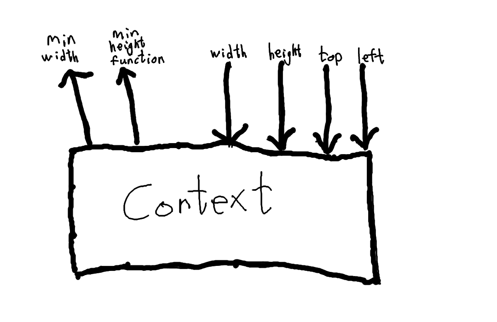

hcj.js
v0.2
Do not use.
Introduction
1. Define Components
2. Define More Components
3. Profit
The browser is a common cross-platform code target. It can make web requests, receive input through form elements, play sounds, render content with opengl, and much more. These features are all available through DOM apis. DOM code is written in HTML, CSS, and/or Javascript, and can run on any platform that implements the browser.
Conveniently, the DOM's apis for element positioning are total. This means it is impossible to write a page that sends your browser's renderer into an infinite loop; furthermore it's easy to live-edit pages in your browser's element inspector. However, as total languages are not turing complete, and as any web developer will tell you, it gets tedious to write HTML and CSS by hand.
Therefore, many applications use Javascript frameworks like Ember, Backbone, Knockout, and others to display views based on application state and handle user input. HCJ is such a javascript framework. The reason it's called hcj.js is that it is intend as a pure javascript framework, calling DOM apis to automate the creation of HTML nodes and application of CSS styles. The HCJ framework enables easy assembly of complex websites using pure Javascript, or alternately even pure JSON.
HCJ's main purpose is element positioning. Using a small subset of CSS styles, it enables you to build websites composably, arranging elements however you want within the space available. The core algorithm is simple: first minimum dimensions are sent from child to parent, second actual dimensions are sent from parent to child. There is an assortment of components that enable simple reactive programming and responsive design, and you can easily write your own components and layouts.
Not all of the display methods available in CSS are implemented by hcj.js. Layouts that would correspond to float left and float right are not currently written. Because HCJ is a javascript framework, page load times become noticable. For SEO, we support rendering using PhantomJS; this can be done either server-side or as part of your build process.
These docs themselves are written using hcj.js, of course. The source is located at https://hcj-js.github.io/hcj/docs.js
The main reason you should not use HCJ is that it might not work. Working is relative to your abilitity to get things done. If you do not know the internal codebase, then you cannot fix bugs and add features. HCJ was pretty easy to write, you should just go write your own.
hcj.js
v0.2
Do not use.
Basic Concepts
A component is a rectangular reusable item that can be rendered into a web page. Components are building blocks of this framework. Technically a component is any function that takes a context and returns an instance.
Furthermore, a container is any component that happens to contain other components. A layout is any function that takes one or more components and returns a component. A style is any function that takes exactly one component and returns a component.
When rendering a component, the context and the instance indicate constraints and dimensions. A container must use DOM styles to position its child components respecting their minimum dimensions, pass them contexts that correctly indicate their actual dimensions, and give them DOM styles to prevent overflow if that is desired.
The context indicates the screen area that an instance has available to it, and also provides the DOM node to render it into. It has the following properties:
• $el: Element to append instance to (as a jquery object).
• width: Stream giving the available width.
• height: Stream giving the available height.
• left: Stream giving the left position relative to $el.
• top: Stream giving the top position relative to $el.
• leftOffset: Stream giving the left position of $el relative to the page.
• topOffset: Stream giving the top position of $el relative to the page.
The instance is returned by a component when it is passed a context. It indicates the minimum dimensions of the content, provides access to its root element for positioning, and also provides a function to fully remove the instance from the DOM. It has the following properties:
• $el: The root element of the instance (as a jquery object).
• minWidth: Stream giving the instance's minimum width.
• minHeight: Stream of functions that, given a width, return the instance's minimum height at that width.
• remove(): Removes the instance from the DOM.
Streams here are defined as HCJ streams, which are described in the "Streams" section.
Here is a diagram showing the context that was passed into a component returning the blue instance:

hcj.js
v0.2
Do not use.
Examples
Demo of some of the components that come with hcj.
text
Display all kinds of text.
big text
little text
colored text
funky text
secret text
image
Display an image

bar.h, bar.v
Make a 20px horizontal separator
TEXT
TEXT
Make a 20px vertical separator
TEXT
TEXT
empty
Make an empty div.
alignHorizontal
Align three items left, right, and middle
LEFT
RIGHT
MIDDLE
alignVertical
Align three items top, bottom, and middle
TOP
BOTTOM
MIDDLE
LARGE TOP
LARGE BOTTOM
LARGE MIDDLE
LARGER TOP
LARGER BOTTOM
LARGER MIDDLE
componentStream
Show a stream of components. Component receives new text each time you press the button
FGKJYFRPUH
grid
Show a grid of components
GRID TEXT
GRID TEXT
GRID TEXT
GRID TEXT
GRID TEXT
GRID TEXT
GRID TEXT
GRID TEXT
GRID TEXT
GRID TEXT
GRID TEXT
GRID TEXT
GRID TEXT
GRID TEXT
GRID TEXT
GRID TEXT
GRID TEXT
GRID TEXT
GRID TEXT
GRID TEXT
GRID TEXT
GRID TEXT
GRID TEXT
GRID TEXT
GRID TEXT
GRID TEXT
GRID TEXT
GRID TEXT
GRID TEXT
GRID TEXT
keepAspectRatio
Maintain aspect ratio even in adverse conditions, both by covering and by containing
largestWidthThatFits
Choose the largest width that fits
aaaaaaaaaaaaaaaaaaaaaaaaaaaaaaaaaaaaaaaaaaaaaaaaaaaaaaaaaaaaaaaaaaaaaaaaaaaaaaaaaaaaaaaaaaaaaaaaaaaaaaaaaaaaaaaaaaaaaaaaaaaaaaaaaaaaaaaaaaaaaaaaaaaaaaaaaaaaaaaaaaaaaaaaaaaaaaaaaaaaaaaaaaa
bbbbbbbbbbbbbbbbbbbbbbbbbbbbbbbbbbbbbbbbbbbbbbbbbbbbbbbbbbbbbbbbbbbbbbbbbbbbbbbbbbbbbbbbbbbbbbbbbbbbbbbbbbbbbbbbbbbbbbbbbbbbbbbbbbbbbbbbbbbbbbbbbbbbbbbbbbbbbbbbbbbbbbbbbb
cccccccccccccccccccccccccccccccccccccccccccccccccccccccccccccccccccccccccccccccccccccccccccccccccccccccccccccccccccccccccccccccccccccccccccccc
dddddddddddddddddddddddddddddddddddddddddddddddddddddddddddddddddddddddddddddddddddddddddddddddddddddddddddddddddddddddddd
eeeeeeeeeeeeeeeeeeeeeeeeeeeeeeeeeeeeeeeeeeeeeeeeeeeeeeeeeeeeeeeeeeeeeeeeeeeeeeeeeeeeeeeeeeeeeeeee
fffffffffffffffffffffffffffffffffffffffffffffffffffffffffffffffffffffffffffffffffffffffffffffffffffffffffffffffffffffffffffffffffffffffffffffffffffffffffffffffffffffff
ggggggggggggggggggggggggggggggggggggggggggggggggggggggg
hhhhhhhhhhhhhhhhhhhhhhhhhhhhhhhhhh
iiiiiiiiiiiii
overlays
Display lots of things on top of each other
Some text
Hello
hi
hi
hi
promiseComponent
Wait until content comes in
sideBySide
Display components side by side
A
B
C
stack
Display components in a stack
A
B
C
backgroundColor
Apply background and font colors
MERRY CHRISTMAS
border
Add a border around an alement
HCJ
crop
Crop from the top, bottom, left, and/or right
HALP
linkTo
Link to google
knowledge awaits
margin
Put a margin around a component
HCJ
minWidth and minHeight
Arbitrarily specify the min width and min height of a component
HCJ
HCJ
HCJ
HCJ
clickThis
prompt the user
hcj.js
v0.2
Do not use.
Using HCJ
To use HCJ, pass a component to the rootComponent function. The following renders a simple page:
<!DOCTYPE HTML><html><head><title>Hcj Demo</title><link rel="stylesheet" type="text/css" href="hcj.css"></head><body><script src="https://code.jquery.com/jquery-3.1.0.js"></script><script src="hcj.min.js"></script><script>var c = hcj.component;var color = hcj.color;var page = c.all([c.margin(10),c.backgroundColor(color.create({r: 200,g: 253,b: 53,})),])(c.text('Hello World'));var rootInstance = hcj.rootComponent(page);</script></body></html>
Currently, it's only possible to render a component by making it a root component of the page. Multiple root components may be used to display some modal dialogs.
Fonts must be loaded before the page is rendered, or text elements will be measured with default fonts. There is no DOM api for font loading, so the general approach is to create an element with some text, measure its width, apply the font family, wait for its width to change, and then run your code.
HCJ includes a font loader window.hcj.waitForWebfonts. The waitForWebfonts function takes three arguments: an array of font families to wait for (these should be defined using @font-face rules), a callback to run when they are all loaded, and an optional max time to wait in the event that a font never loads, which defaults to 10 seconds. waitForWebfonts is known not to work for some browser / font combinations, it's terrible.
hcj.js
v0.2
Do not use.
Streams
In order for nested elements to communicate dimensions with each other, a common stream interface is needed. There is no native Javascript stream implementation, and for this kind of application certain performance characteristics are preferred, so HCJ specifies a stream interface to use, and also provides a grimy little implementation of it.
An hcj stream is an object with two properties:
• lastValue: the most recent data point
• listeners: array of functions that are run when there is new data (private member, do not access)
Streams can be defined either declaratively or imperatively. That is, you can let a stream be an operation applied to other streams, or you can just create it and push to it like a bus. Unlike in other stream implementations:
• The most recent data point is accessible through the lastValue property, and may be read off at your leisure.
• If you push one value through a stream multiple times, it will only be hanlded the first time.
• If you push multiple values through a stream quickly (synchronously), intermediate values will be skipped.
Note: to skip intermediate values, setTimeout calls are made. When streams are defined in terms of each other, multiple setTimeout calls are made in sequence. If you want to run some code after all stream operations are finished (e.g. after the page has finished rendering in response to some change), you must call stream.defer instead of setTimeout. (Furthermore, when writing components and layouts, if you want to defer the execution of a block of code and then push to a stream, call stream.next instead of setTimeout. Otherwise, stream.defer calls will not know to wait for your code.)
Here are the stream functions. These are all properties of the window.hcj.stream object:
combine
combine : ([Stream a, Stream b, ...], ((a, b, ...) -> x)) -> Stream x
Takes an array of streams, and a function. Result stream applies the function to the latest values from all input streams.
combineInto
combine : ([Stream a, Stream b, ...], ((a, b, ...) -> x), Stream x) -> IO ()
Imperative form of combine. Takes an array of streams, a function, and a target stream, and pushes all values into the target stream.
combineObject
combineObject : {x: Stream a, y: Stream b, ...} -> Stream {x: a, y: b, ...}
Takes an object whose properties are streams, returns a stream of objects.
create
create : Maybe a -> Stream a
Creates a stream, and initializes it using the optional argument passed in. The push or pushAll functions can be used to push in additional points into the stream.
Example:
var onceFiftyS = stream.create(50);
debounce
debounce : Stream a -> Number -> Stream a
Pushes to output stream no more quickly than the given number of milliseconds.
delay
delay : Stream a -> Number -> Stream a
Pushes to output stream after waiting the given number of milliseconds.
filter
filter : Stream a -> (a -> Bool) -> Stream a
Returns a stream that includes only the values for which the provided predicate returns something truthy.
fromPromise
fromPromise : Promise a -> a -> Stream a
Takes a promise, and an optional initial value. Returns a stream (optionally initialized with the initial value), which receives the value from the promise when it resolves.
map
map : Stream a -> (a -> b) -> Stream b
Applies a function to each data point of a stream.
Example:
var centsS = stream.create();var dollarAmountS = stream.map(centsS, function (cents) {return Math.floor(cents / 100) + '.' + (cents % 100);})
promise
promise : Stream a -> Promise a
Returns a promise that resolves as soon as there is a data point in the stream.
prop
prop : Stream {x: a} -> ("x" : String) -> Stream a
Maps over a stream of objects, accessing the specified key. That type signature uses some made-up notation for polymorphic row types.
push
push : Stream a -> a -> IO ()
Pushes a value onto a stream.
Example:
var clickS = stream.create();$el.on('click', function (ev) {stream.push(clickS, ev)})
pushAll
pushAll : Stream a -> Stream a -> IO ()
Pushes all values from one stream onto another stream.
Example:
var sourceS = stream.create();var targetS = stream.create();stream.pushAll(sourceS, targetS);
reduce
reduce : Stream a -> (b -> a -> b) -> b -> Stream b
Applies a function to each data point of a stream, keeping a running total. Like array reduce, but the reduce callback has the orders of the arguments reversed.
Example:
var clickS = stream.create();var countClicksS = stream.reduce(clickS, function (x)return x + 1;}, 0);
splitObject
splitObject : {x: a, y: b, ...} -> {x: Stream a, y: Stream a, ...}
Takes an object, returns an object where each property is a stream initialized with the value from the input object.
hcj.js
v0.2
Do not use.
Defining Components
We provide a handy hcj.component.component function for defining components. It takes two arguments, an optional tag name (which defaults to 'div') and a build method, and returns a component.
component : (Maybe String, BuildComponent) -> Component
type BuildComponent = (JQuery, Context) -> {minWidth, minHeight, onRemove}
The build method initializes the component and indicates its minimum dimensions. It is passed two arguments: $el, the created root element of the component (as a jquery object), and context, the context as it was passed into the component.
It returns an object with minWidth and minHeight properties, and an optional onRemove property. The minWidth and minHeight properties are streams of numbers, and streams of functions from numbers to numbers, respectively. Any returned onRemove function will be called when the instance's remove function is called.
To measure elements' minimum sizes, HCJ provides hcj.measure.width and hcj.measure.height. These functions take JQuery selectors of elements, and return numbers and functions from numbers to numbers, respectively. They clone the element, attach the clone to a sandbox, set a couple CSS properties, measure it, remove the clone, and return the size.
Example:
// component for the imaginary SomeCaptchavar c = window.hcj.component;var stream = window.hcj.stream;var captcha = c.component(function ($el, context) {var minWidthS = stream.once(hcj.measure.width($el));var minHeightS = stream.once(hcj.measure.height($el));var someCaptcha = SomeCaptcha.render($el).then(function () {stream.push(minWidthS, hcj.measure.width($el));context.onRemove(function () {someCaptcha.remove();});});return {minWidth: minWidthS,minHeight: minHeightS,};});
hcj.js
v0.2
Do not use.
Defining Layouts
The hcj.component.container method is for defining layouts and other containers. It takes an optional string argument giving its tag name, followed by a build method.
container : (Maybe String, BuildContainer) -> Component
type BuildContainer = (JQuery, Context, Append) -> {minWidth, minHeight, onRemove}
type Append = (Component, Viewport, Maybe) -> Instance
The build method takes three arguments. The first two, $el and context, are passed through from the component call that is made internally. The third argument, append, is a function used to append child components to the container.
The append function takes three arguments: the component to append, a viewport, and a noPositionChildren flag.
The append function's viewport argument is an object that is enriched into a context and then passed into the append function's component argument. It has the following optional properties:
• $el: Element to append instance to. Defaults to the container's root element.
• width: Stream giving the width of the viewport. Defaults to container width.
• height: Stream giving the height of the viewport. Defaults to container height.
• left: Stream giving the left coordinate of the viewport. Defaults to 0.
• top: Stream giving the top coordinate of the viewport. Defaults to 0.
• widthCss: Stream of string values to use to the 'width' property. Needed for CSS transitions to work correctly. Defaults to mapping (+ 'px') over the viewport's width, or '100%'.
• heightCss: Stream of string values to use to the 'height' property. Needed for CSS transitions to work correctly. Defaults to mapping (+ 'px') over the viewport's height, or '100%'.
• topCss: Stream of string values to use to the 'top' property. Needed for CSS transitions to work correctly. Defaults to mapping (+ 'px') over the viewport's top, or '0px'.
• leftCss: Stream of string values to use to the 'left' property. Needed for CSS transitions to work correctly. Defaults to mapping (+ 'px') over the viewport's left, or '0px'.
If the noPositionChildren flag is not undefined, then the child component's top, width, left, and height properties will not be set to the CSS values described above. Indeed, you can write an HCJ container that positions elements using flexbox, as long as it correctly indicates their contexts given its context, as well as its minimum dimensions given theirs.
Example - Top Margin
someLayout :: Component -> Component
Here is an example of a layout that pushes its content down by five pixels. To do this, it creates a viewport with a top stream, and returns a min size with a minHeight that is increased by five pixels.
var c = hcj.componentvar someLayout = function (c) {return c.container(function ($el, ctx, append) {var instance = append(c, {top: stream.create(5),});return {minWidth: instance.minWidth,minHeight: stream.map(instance.minHeight, function (mh) {return function (w) {return mh(w) + 5;};})};});};
Example - Purple Background
purpleBackground :: Component -> Component
Imagine we want to define a layout that adds a 10px margin and gives a component a purple background. Here's how we can do it:
var purpleBackground = function (c) {return c.container(function ($el, context, append) {$el.css('background-color', '#FF00FF');var instance = append(c, {width: stream.map(context.width, function (w) {return w - 20;}),height: stream.map(context.height(function (h) {return h - 20;}),top: stream.once(10),left: stream.once(10),});return {minWidth: stream.map(instance.minWidth, function (mw) {return mw + 20;}),minHeight: stream.map(instance.minHeight, function (mh) {return function (w) {return mh(w - 20) + 20;};}),};});};
Example - Simple Stack
stack :: Array(Component) -> Component
Say we want to put components into a vertical stack.
In this code, first we map over the components argument to initialize an array of viewports, and an array of instances. Next, we use the HCJ stream library to combine some streams together so that every time the stack's context changes or an appended component's min size changes, positions are recalculated and pushed into the viewports. Last, we let the min width of the stack be the max of the min widths of the child components, and the min height be the sum of the min heights of the child components.
var stack = function (cs) {return c.container(function ($el, context, append) {var viewports = [];var instances = [];cs.map(function (c, index) {var viewport = {top: stream.create(),height: stream.create(),};viewports.push(viewport);instances.push(append(c, viewport));});var minWidthsS = stream.all(instances.map(function (i) {return i.minWidth;}));var minHeightsS = stream.all(instances.map(function (i) {return i.minHeight;}));stream.combine([context.width,context.height,minHeightsS,], function (w, h, mhs) {var top = 0;mhs.map(function (mh, index) {var viewport = viewports[index];var height = mh(w);stream.push(viewport.top, top);stream.push(viewport.height, height);top += h;});});return {minWidth: stream.map(minWidthsS, function (mws) {return mws.reduce(function (a, b) {return Math.max(a, b);}, 0);}),minHeight: stream.map(minHeightsS, function (mhs) {return function (w) {return mhs.map(function (mh) {return mh(w);}).reduce(function (a, b) {return a + b;}, 0);};}),};});};
hcj.js
v0.2
Do not use.
API - Components
Here, in no particular order, are the hcj.js components.
These are found in the window.hcj.component object.
text
text :: ([SpanConfig], TextConfig) -> Component
The text function has a rather complex API.
It is a two-argument function. The first argument can either be one SpanConfig or an array of SpanConfigs. The second argument is an optional TextConfig.
A SpanConfig may be either a string, or an object with the following properties (all optional except str which is required):
• str: The string to show.
• size: font size
• weight: font weight
• family: font family
• color: font color as an object with r, g, b, and a properties
• shadow: font shadow
• spanCSS: Array of objects with name and value properties. Additional CSS styles to apply to the span.
The TextConfig parameter applies globally to all spans within the text component. It can have all of the same properties as a SpanConfig, minus str, plus some additional properties:
• align: text align
• minWidth: causes the text's width not to be measured; this number is used instead
• minHeight: causes the text's height not to be measured; this number is used instead
• oneLine: causes the text's height not to be measured. It is assumed to be one line tall. Its min height value is calculated from its font size and line height.
Each time dimensions may change, text first approximates its min width and min height by assuming that a character has a width of 0.5 times its height. Then, it performs the above operation. If oneLine is set, then height approximation is not performed.
Examples:
var c = window.hcj.component;var hello = c.text('Hello');var largeText = c.text('Large Text', {size: '50px',});var spans = c.text([{str: 'SANTIH',weight: 'bold',}, {str: '_OEFYCL_OE',family: 'Lato',}]);
image
image :: ImageConfig -> Component
An ImageConfig may have the following properties, all optional except src which is required. By default, an image's min width is set to its natural width, and its min height is set to maintain aspect ratio.
• src: image source
• minWidth: if present, min width is set to this number instead of the image's natural width
• minHeight: if present, min width of image is set to the quotient of this number and the image's aspect ratio
Note: Images will almost always stretch. To solve this, wrap them in the keepAspectRatio layout.
bar.h, bar.v, and rectangle
bar.h :: Number -> Component
bar.v :: Number -> Component
rectangle :: {[h, x]: Number, [v, y]: Number} -> Component
bar.h and bar.v create horizontal and vertical separators of the size you specify. rectangle takes an object with h and v or x and y properties, and creates a rectangle of that size.
empty
empty :: String -> Component
nothing :: Component
The empty function takes a tag name and returns a component with zero width and zero height using that tag name.
The nothing component is defined as empty("div").
hcj.js
v0.2
Do not use.
API - Layouts
Here are the hcj.js layouts. Some take optional configuration objects. These can be called either curried or not, i.e. you can pass in only the config object and receive a function from components to components.
These are found in the window.hcj.component object.
alignHorizontal (alignH, alignLRM)
alignHorizontal :: {l: Component, r: Component, m: Component} -> Component
alignHLeft :: Component -> Component
alignHRight :: Component -> Component
alignHMiddle :: Component -> Component
Takes an object with l, r, and/or m properties. Aligns components left, right, and middle.
Example:
var c = window.hcj.component;var logo = c.text('logo');var menu = c.text('menu');var header = c.alignH({l: logo,r: menu,});
alignVertical (alignV, alignTBM)
alignVertical :: {t: Component, b: Component, m: Component} -> Component
alignVTop :: Component -> Component
alignVBottom :: Component -> Component
alignVMiddle :: Component -> Component
Takes up to three components. Aligns them top, bottom, and middle within the space available. Three functions are also provided that operate on just one component each.
componentStream
componentStream :: Stream(Component) -> Component
promiseComponent :: (Promise(Component), Component) -> Component
componentStream takes an hcj stream of components and returns a component that displays the latest one.
promiseComponent takes a promise that resolves to a component and an optional initial component to display, and returns a corresponding componentStream.
grid
grid :: GridConfig -> Array(Component) -> Component
A responsive grid layout. Components are placed into rows.
• padding: padding amount between components
• surplusWidthFunc: splits surplus width among components in each row; see sideBySide
• surplusHeightFunc: splits surplus hegiht among grid rows; see stack
• useFullWidth: if set, the grid's min width is computued as the sum of the min widths of the child components, rather than as the largest of the min widths of the child components
keepAspectRatio
keepAspectRatio :: KeepAspectRatioConfig -> Component -> Component
Behaves much like the background CSS property.
Positions a component in a space, maintaining its aspect ratio. Will exhibit strange behavior when the child component's aspect ratio is not constant.
A KeepAspectRatioConfig may have any of the following properties:
• fill: If set, the child component covers the space and may be cropped. If not set, the child component is contained within the space and there may be margins.
• top: If set, the top of the child component is aligned with the top of the keepAspectRatio component.
• bottom: If set, the bottom of the child component is aligned with the bottom of the keepAspectRatio component.
• left: If set, the left of the child component is aligned with the left of the keepAspectRatio component.
• right: If set, the left of the child component is aligned with the left of the keepAspectRatio component.
largestWidthThatFits
largestWidthThatFits :: Array(Component) -> Component
Chooses the largest-width component that fits inside its own given width, among the components passed in. (Currently will crash if none fit.)
overlays
overlays :: OverlaysConfig -> Array(Component) -> Component
Places components one directly on top of another.
The OverlaysConfig is not currently used.
promiseComponent
see componentStream
sideBySide
sideBySide :: SideBySideConfig -> Array(Component) -> Component
Puts components directly side by side.
A SideBySideConfig may have the following properties:
• padding: Padding amount between components.
• surplusWidthFunc: Similar to a stack, a sideBySide can have surplus width. A surplusWidthFunc function takes two arguments. The first is the actual width of the sideBySide. The second is an array of objects with left and width properties, giving the computed left coordinate and min width of each child within the stack. It returns a new array of objects with left and width coordinates.
stack
stack :: StackConfig -> Array(Component) -> Component
Puts components in a stack, one on top of another.
A StackConfig may have the following properties:
• padding: Padding amount between components.
• surplusHeightFunc: There can be surplus height, i.e. the actual height of the stack can be greater than the minimim heights of all of the children. A surplusHeightFunc function takes two arguments. The first argument is the actual height of the stack (in pixels). The second argument is an array of objects with top and height properties, giving the computed top coordinate and min height of each child within the stack (in pixels). It returns a new array of objects with top and height properties.
hcj.js
v0.2
Do not use.
API - Styles
While the layouts in the previous section take multiple components and return a component, layouts that take exactly one component and return a component, sometimes called styles, can add much customization and functionality.
These styles are all properties of the window.hcj.component object.
all, compose
all :: Array(Component -> Component) -> Component -> Component
The hcj.component.all (aka hcj.component.compose) function is listed first because it is real good. It performs function composition, i.e. applies multiple styles, one after another.
Example:
var title = all([margin({all: 10,}),border(color.white, {all: 1,}),])(text('Text'));
Example showing nesting:
var prettyBorder = all([border(white, {all: 1,});border(gray, {all: 1,});border(black, {all: 1,});]);var button = all([margin({all: 10,}),prettyBorder,])(text('Submit'));
$$, $addClass, $attr, $css, $on, $prop
$$ :: ($ -> IO ()) -> Component -> Component
$addClass :: String -> Component -> Component
$attr :: (String, String) -> Component -> Component
$css :: (String, String) -> Component -> Component
$on :: (String, (Event -> IO ())) -> Component -> Component
$prop :: (String, String) -> Component -> Component
These methods demonstrate HCJ's jquery dependency. Defined using and, hcj.component.$$ takes a function of the JQuery selector of an instance. The rest of these methods are simply defined in terms of $$.
and
and :: ((Instance, Context) -> IO ()) -> Component -> Component
The hcj.component.and function is a misc method that lets you operate on an instance each time a component is rendered. It takes a function of an instance and a context, and it returns a function from a component to a component. Example:
var turnBlue = and(function (i) {i.$el.css('background-color', 'blue');});
backgroundColor
backgroundColor :: BackgroundColorConfig -> Component -> Component
Applies a background color and a font color to a component
A BackgroundColorConfig is an object or a stream of objects. If it is an object, then its properties may be streams instead of single values. In any case, it has the following properties:
• background: background color
• font: font color
• backgroundHover: background color on hover
• fontHover: font color on hover
border
border :: Color -> BorderConfig -> Component -> Component
Adds a colored border around a component.
A Color is an object with r, g, b, and a properties. (see below)
A BorderConfig is an object with the following properties:
• all: border to apply to all sides
• top: border to apply to the top
• bottom: border to apply to bottom
• left: border to apply to the left side
• right: border to apply to the right side
• radius: border radius
crop
Crops a component down to a proportion of its size.
crop :: CropConfig -> Component -> Component
A CropConfig can either be a number, which is treated as an object with an 'all' property of that value, or an object with any of the following properties:
• all: crop percentage on all sides
• top: crop percentage from the top
• bottom: crop percentage from the bottom
• left: crop percentage from the left
• right: crop percentage from the right
link
link :: Component -> Component
Applies a certain hover effect.
linkTo
linkTo :: LinkConfig -> Component -> Component
Wraps component it in an a tag with a particular href.
A LinkConfig is an object with the following properties:
• href: href property (required)
• target: link target
margin
margin :: MarginConfig -> Component -> Component
Adds some space around a component.
A MarginConfig may have any of the following properties:
• all: margin to apply to all sides
• top: margin to apply to the top
• bottom: margin to apply to bottom
• left: margin to apply to the left side
• right: margin to apply to the right side
minHeight
minHeight :: MinHeight -> Component -> Component
minHeightAtLeast :: MinHeightAtLeast -> Component -> Component
Overrides the min height of a component.
The MinHeight can be a function from numbers to numbers, a stream of functions from numbers to numbers, or a function that takes the Instance and Context and returns a stream of functions from numbers to numbers.
minHeightAtLeast takes a number or a stream of numbers, and sets the min height of a component to be at least that great.
minWidth
minWidth :: MinWidth -> Component -> Component
minWidthAtLeast :: MinWidthAtLeast -> Component -> Component
Overrides the min width of a component.
The MinWidth can be a number, a stream of numbers, or a function that takes the Instance and Context and returns a stream of numbers.
minWidthAtLeast takes a number or a stream of numbers, and sets the min width of a component to be at least that great.
onThis
onThis :: String -> (Event -> IO ()) -> Component -> Component
changeThis :: (Event -> IO ()) -> Component -> Component
clickThis :: (Event -> IO ()) -> Component -> Component
keydownThis :: (Event -> IO ()) -> Component -> Component
keyupThis :: (Event -> IO ()) -> Component -> Component
mousedownThis :: (Event -> IO ()) -> Component -> Component
mousemoveThis :: (Event -> IO ()) -> Component -> Component
mouseoverThis :: (Event -> IO ()) -> Component -> Component
mouseoutThis :: (Event -> IO ()) -> Component -> Component
mouseupThis :: (Event -> IO ()) -> Component -> Component
onThis is a curried form of the $on function. Additional functions are also provided where it is called with its first argument.
hcj.js
v0.2
Do not use.
API - Forms
Hcj takes the liberty of providing some reactive form components.
formType
The object window.hcj.forms.formType is used for specifying form types. Intuitively, a form type determines both the type that the user inputs, and the form element's logical internal type. An HCJ form component maintains a stream of the latter type, pushing to it and/or updating the user-facing values of the former type(s).
Its values are the form type constructors. These are either literally form types, or functions that take some parameters and return form types. A form type is a row type, an object with at least a type property tagging the form type, and optionally extra properties determined by the tag.
Here are the form type constructors, with demos:
button
button : (String, (Event, Stream, Disable) -> IO ()) -> FormType
Takes a button title and an onClick handler, and returns a button FormType. The onClick handler receives the click event, the form element's stream for pushing to, and a disable function, which "disables" the button and returns an enable function, which re-enables the button. Click events will only be processed if the button is enabled. The returned FormType has three extra properties: enabledS, a boolean stream that tells whether the button is enabled and which you may push to, as well as name and onClick, the passed-in values.
The demo pushes 1 + the stream's last value onto the stream each time the button is pressed. It also disables the button for a while.
0 presses
checkbox
checkbox : FormType
unchecked
date
date : FormType
null
dropdown
dropdown : Array({name: String, value: String}) -> FormType
Takes an array of objects with name and value properties giving the options' names and values.
a
image
image : FormType
File with accept="image/*". Will be changed to file function by hcj version 1.0.
number
number : FormType
null
password
password : FormType
radios
radios : Array(String) -> FormType
Takes an arrary of strings giving the buttons' unique values.
text
text : FormType
textarea
textarea : FormType
time
time : FormType
formComponent
formStyle.text : (String, Stream, FieldType) -> Component
The window.hcj.forms.formComponent object has exactly the same keys as window.hcj.forms.formType. Its values are functions that take parameters and return form inputs. These parameters are the name/id of the element, the value stream, and the form type if needed.
Note: the window.hcj.forms.formComponent.radios function returns not one component but an array of components.
Example:
var dropdownFormType = forms.formType.dropdown([{name: 'A',value: 'a',}, {name: 'B',value: 'b',}]));var dropdown = forms.formComponent.dropdown('dropdown', stream.create(), dropdownFormType);
formStyle
formStyle.text : (String, String, Stream, FieldType) -> (Component -> Component)
The window.hcj.forms.formStyle object has exactly the same keys as window.hcj.forms.formType. Its values are functions that take four paramaters: a field name, the name/id attribute, a stream, and an optional form type. They return styles that should be applied to the formComponent output values.
Note: the window.hcj.formStyle.radios function returns not a style, but a layout taking the entire array of radio buttons.
Example:
var text = forms.formComponent.text();var labeledText = forms.formStyle('Field Name')(text);
formFor
The formFor is a large curried function for generating forms. It takes multiple parameters, and then returns a component.
First, it takes a formType argument and a formComponent argument. You can pass in hcj.forms.formType and hcj.forms.formComponent, or you can add additional properties to those objects corresponding to your form types first.
Second, types the data model and optionally names the field names. The first parameter types is an object whose values are form types. The second parameter names is an object whose values are strings - except for radio, in which case the value must be an object with a String name property and an Array(String) options property.
Third, it takes an optional default object giving default values. This object should have the same keys as types and names - these keys are also used as the name/id of the form inputs.
Fourth, it takes a mkOnSubmit method. This method sets up the submit behavior of the form. It is passed two parameters: an object of streams streams, and a disable method. The streams object has the same keys as the types, names, and defaults objects, and its values are the streams of form values. The disable method works like the button disable method, disabling the submit button. The mkOnSubmit method should return an object with two properties: onSubmit and optionally resultS. The onSubmit property is the onSubmit function of the form. Typical usage might be to inspect the lastValue properties of the streams and then make an ajax request. The optional resultS property is the error state of the form.
Fifth, it takes a formStyle object. This can be hcj.forms.formStyle, or your own object using the same API.
Sixth and last, it takes f, the form constructor. This function takes four parameters. First is streams, the same streams object passed into mkOnSubmit. Second is inputs, an object whose keys are the same as the types, names, defaults, etc. objects, and whose values are the input components. Third is submit, a function that takes a string name and returns a submit button component using that button name. Fourth is resultS, the error state stream. The form constructor returns a component. The form constructor is immediately applied, and the component is returned.
So, after six sets of parentheses, formFor returns a component.
Example: Edit Profile Form
var formFor = window.hcj.forms.formFor(window.hcj.forms.formType, window.hcj.forms.formComponent);var profileForm = formFor({name: formType.text,imageUrl: formType.image,email: formType.text,description: formType.textarea,phone: formType.text,address_1: formType.text,address_2: formType.text,website: formType.text,}, {name: 'Name',imageUrl: 'Upload Profile Picture',email: 'Email',description: 'Description',phone: 'Phone',address_1: 'Address 1',address_2: 'Address 2',website: 'Website',})()(function (streams) {return {onSubmit: function (ev) {ev.preventDefault();db.profile.insertOrUpdate(profile, {user: me._id,name: streams.name.lastValue,imageUrl: imageUrl,email: streams.email.lastValue,description: streams.description.lastValue,phone: streams.phone.lastValue,address_1: streams.address_1.lastValue,address_2: streams.address_2.lastValue,website: streams.website.lastValue,}).then(function () {window.location = '/profile/' + me._id;});},};})(prettyFormStyle)(function (streams, inputs, submit) {return c.stack({padding: 20,})([c.text('Edit Profile', fonts.h1),inputs.name,inputs.imageUrl,inputs.email,inputs.description,inputs.phone,inputs.address_1,inputs.address_2,inputs.website,c.alignLRM()({l: submit('Save'),}),]);})
Happy Profile Editing
hcj.js
v0.2
Do not use.
API - Colors
HCJ has a standard notation for colors. A Color is an object with all of the following properties:
These functions are found in window.hcj.color
• r: red value from 0 to 255
• g: green value from 0 to 255
• b: blue value from 0 to 255
• a: alpha value from 0 to 1
color
Color constructor. Easier than describing further, is pasting the code:
var color = function (c) {return {r: c.r || 0,g: c.g || 0,b: c.b || 0,a: c.a || 1,};};
colorString
Color destructor. Takes a color, returns string using rgba format.
hcj.js
v0.2
Do not use.
Possible Future Development
Improve text measurement by using the canvas measureText method instead of the current strategy of appending the text to an invisible dom element. Use this to implement a float left/right layout.
Figure out how to integrate CSS transitions properly.
Remove JQuery dependency, making hcj smaller and more agnostic.
Add more comments.
Turing-complete JSON subset that can be evaluated server-side to HTML/CSS and client-side to an HCJ component.
hcj.js
v0.2
Do not use.
Community
Join #hcj on Freenode, or leave a message on the Github repository. We can't promise that HCJ is the best implementation of what we're going for, nor that we will be the best maintainers of it, but if you should submit an issue or make a pull request we will make some kind of effort to address it properly.